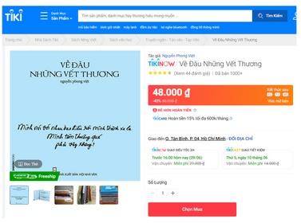
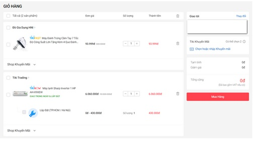
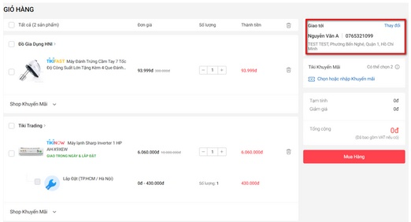
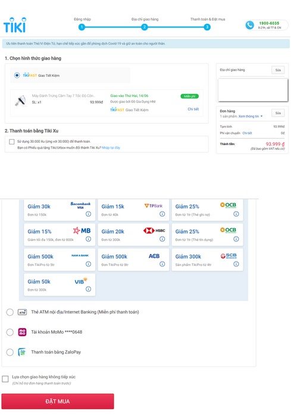

Quý khách có thể đặt hàng trực tuyến ở website Tiki thông qua các bước đặt hàng cơ bản.
Vui lòng tham khảo thông tin chi tiết về từng bước đặt hàng như sau:
Quý khách vui lòng đăng nhập bằng tài khoản đã có ở Tiki hoặc đăng nhập thông qua Facebook/ Zalo/ Google. Trong trường hợp chưa đăng ký tài khoản, quý khách có thể chọn dòng “Tạo tài khoản” để đăng ký tài khoản tại Tiki.
Sau khi đã hoàn tất, quý khách có thể bấm vào chữ “Tạo tài khoản” để hoàn tất quá trình đăng ký.
Quý khách có thể tìm sản phẩm theo 3 cách:
Khi đã tìm được sản phẩm mong muốn, quý khách vui lòng bấm vào hình hoặc tên sản phẩm để vào được trang thông tin chi tiết của sản phẩm, sau đó:
Khi đã thao tác bỏ sản phẩm đầu tiên vào đơn hàng, quý khách vui lòng thực hiện các bước sau để thêm các sản phẩm khác vào giỏ hàng:

*Quá trình này có thể lặp lại cho đến khi quý khách hoàn tất việc bỏ tất cả các sản phẩm cần đặt mua vào giỏ hàng*.
Quý khách có thể đặt các sản phẩm khác nhau trong 1 giỏ hàng thành 1 đơn hàng, các sản phẩm trong giỏ hàng sẽ được đóng thành 1 kiện hàng (nếu sản phẩm thuộc cùng 1 nhà cung cấp/kho xử lý) và giao đến địa chỉ quý khách đã đăng ký.
Sau khi quý khách đã có đủ sản phẩm cần đặt trong giỏ hàng, vui lòng mã giảm giá (nếu có) và tiếp tục các bước sau để đặt hàng:


Tiki hỗ trợ giao hàng và thanh toán tận nơi cho các đơn hàng có tổng trị giá từ 20.000.000đ trở xuống trên toàn quốc. Quý khách vui lòng tham khảo thêm tại: Các Phương Thức Thanh Toán
Sau khi hoàn tất quá trình chọn phương thức thanh toán, vui lòng kiểm tra lại các thông tin sau: xuất hóa đơn VAT (nếu có), địa chỉ nhận hàng, giá khuyến mãi, tổng tiền.
Nếu các thông tin trên đã chính xác, quý khách vui lòng bấm “Đặt Mua”, hệ thống sẽ bắt đầu tiến hành tạo đơn hàng dựa trên các thông tin quý khách đã đăng ký.

Sau khi hoàn tất cả bước đặt mua, hệ thống sẽ gửi đến quý khách một mã số đơn hàng và thông báo thời gian giao hàng dự kiến, quý khách có thể kiểm tra lại đơn hàng bằng cách bấm vào dòng “đơn hàng của tôi” hoặc email xác nhận đơn hàng.
Sau khi đặt hàng thành công, quý khách có thể theo dõi tiến trình xử lý và vận chuyển của đơn hàng bằng cách đăng nhập vào đường link: http://tiki.vn/tracking-order-form.
Tiki khuyến khích quý khách tự thao tác đặt hàng để có thể tham gia ưu đãi và theo dõi tình trạng đơn hàng. Trường hợp quý khách yêu cầu Tiki hỗ trợ đặt hàng thay Tiki rất tiếc chưa áp dụng Tiki Xu, bookcare, coupon cho đơn hàng.
ĐẶT HÀNG VÀ THANH TOÁN Hướng Dẫn Đặt Hàng
Chính sách bảo hành tại Tiki như thế nào?
Chính sách đổi trả tại Tiki như thế nào?<
Làm cách nào để tôi đổi/trả sản phẩm do Tiki giao thiếu/sai sản phẩm?
Làm thế nào để tôi đăng ký xuất hóa đơn khi mua hàng tại Tiki?
Làm thế nào để tôi đặt hàng qua website Tiki?
Tiki xu là gì? Giá trị quy đổi nhu thế nào?
Tiki hiện đang hỗ trợ các phương thức thanh toán nào?